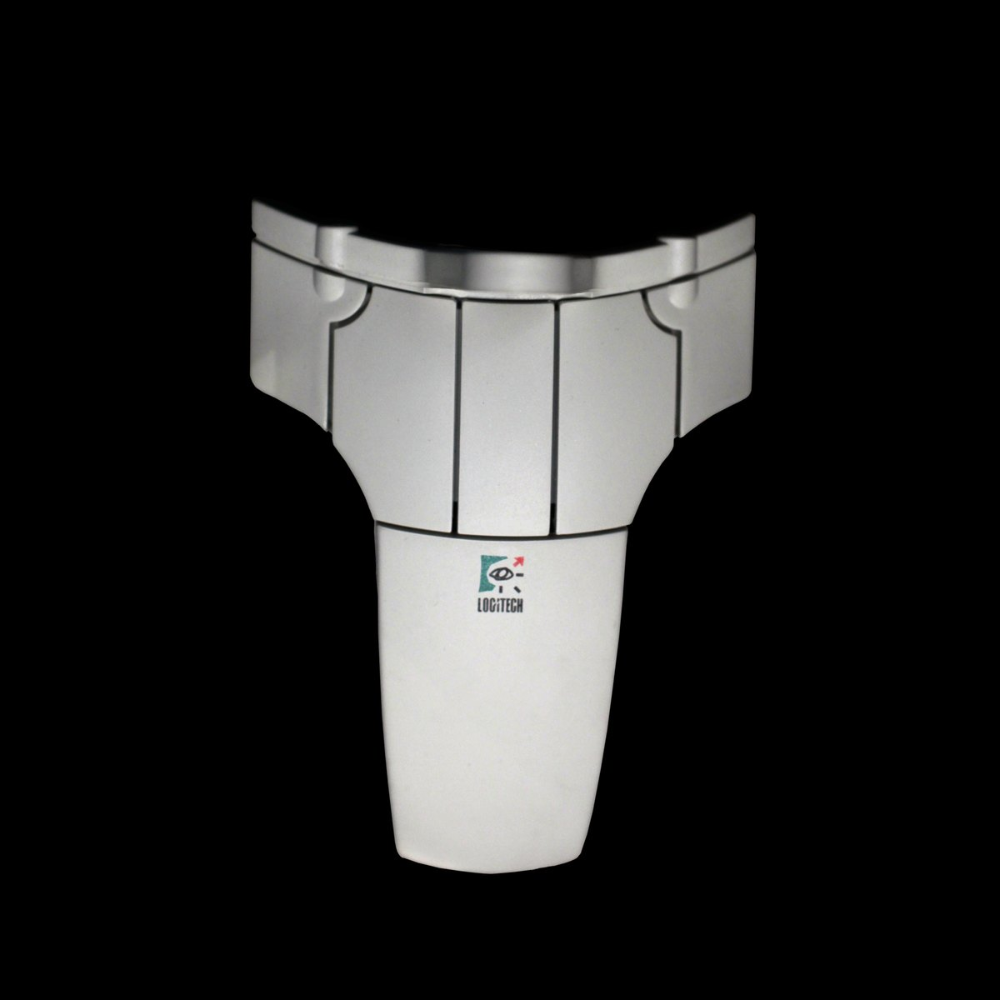

Logitech 3D Mouse (Fly Mouse)
A free-space 6-DOF mouse you lift into the air and fly — ultrasonic time-of-flight tracks your hand in 3D

Overview
The Logitech 3D Mouse (also known as the Fly Mouse), introduced around 1990, is a free-space, 6-degree-of-freedom (6-DOF) computer mouse. Instead of rolling on a desk, the operator grips the mouse and moves it through the air; ultrasonic time-of-flight tracking resolves position and orientation in three dimensions, letting the hand directly pilot X/Y/Z translation plus pitch/yaw/roll rotation. It is one of the first commercial attempts to make 3D manipulation feel like wielding a physical object rather than steering a flat cursor.
Because the sensing is ultrasonic and the device is designed to be picked up, the mouse offers a freedom the rolling-ball mice of the era could not — there is no desk surface, no pad, no ball to lift. It is the museum's only free-space isotonic 6-DOF pointer, and the embodied counterpart to the isometric force-sensing DLR SpaceMouse already in the collection.
### Flying, not rolling
The defining interaction is lifting the mouse off the desk. A conventional mouse maps planar motion to 2D cursor movement; the 3D Mouse maps free-space motion to all six degrees. Twisting the body and pitching it read as rotation, which makes navigating a 3D scene feel like holding and turning a physical object rather than dragging a pointer.
### Ultrasonic time-of-flight
Position and orientation are derived from ultrasonic time-of-flight — a rare sensing principle in the collection (shared with acoustic digitizers like the GrafBar). The device carries the transducers and the computer resolves hand position from the travel time of the sound bursts, allowing 6-DOF without contact or a reference surface.
### A distinct corner of 6-DOF input
The DLR SpaceMouse/Control Ball is isometric — you push a spring-centered ball that does not move. The Logitech 3D Mouse is the opposite corner: isotonic, free-space, wand-like. Together they bracket the two physical metaphors for 6-DOF control that dominated early 3D interfaces.
Deep dive
Team & pioneers
- Logitech. Maker.
Media
